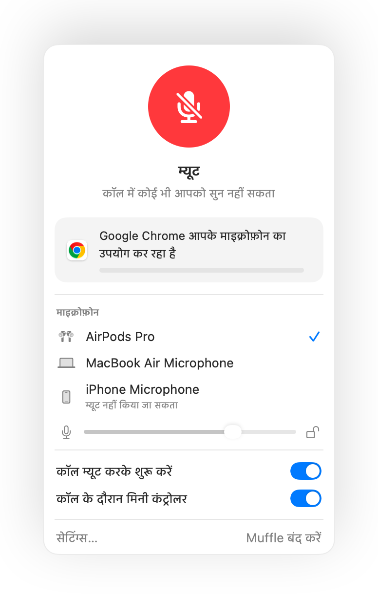

Mac पर हर ऐप में पुश टू टॉक का इस्तेमाल करें
पुश टू टॉक आपको तब तक म्यूट रखता है जब तक आप कोई की दबाए न रखें। बड़ी मीटिंग या शोर वाले कमरों में शांत रहने का यह सबसे आसान तरीका है, फिर भी कुछ ही ऐप में यह सुविधा होती है और सब में अलग की इस्तेमाल होती है।
Muffle आपके Mac के हर ऐप में पुश टू टॉक की सुविधा जोड़ता है। म्यूट रहें, बोलने के लिए शॉर्टकट दबाए रखें और फिर से म्यूट होने के लिए छोड़ दें।
Muffle 3 दिन मुफ़्त आज़माएंMac App Store पर जल्द आ रहा है
पुश टू टॉक इस्तेमाल करें
- Muffle इंस्टॉल करें।
- Control-Option-M या अपने AirPods से म्यूट करें।
- बोलते समय Control-Option-M दबाए रखें।
- छोड़ दें। आप फिर से म्यूट हो जाएंगे।

- शॉर्टकट को बस एक बार टैप करने से म्यूट टॉगल होता है। उसे दबाए रखना पुश टू टॉक है।
- Muffle सेटिंग्स में अपनी पसंद की आसान की चुनें, उदाहरण के लिए कोई F की।
अक्सर पूछे जाने वाले सवाल
क्या पुश टू टॉक Google Meet में काम करता है?
हाँ। Muffle खुद माइक्रोफ़ोन को म्यूट करता है, इसलिए पुश टू टॉक सुविधा Meet, Zoom, Teams, Discord और किसी भी अन्य ऐप में काम करती है।
क्या इसमें पुश टू म्यूट की सुविधा है?
हाँ। जब आप अनम्यूट होते हैं, तो शॉर्टकट दबाए रखने पर आप तब तक म्यूट रहते हैं जब तक आप उसे छोड़ नहीं देते।